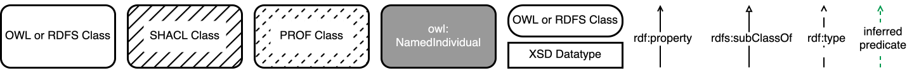
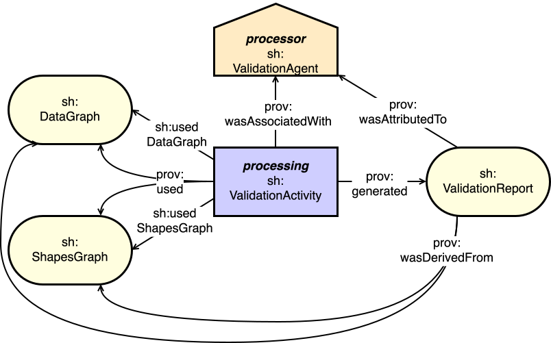
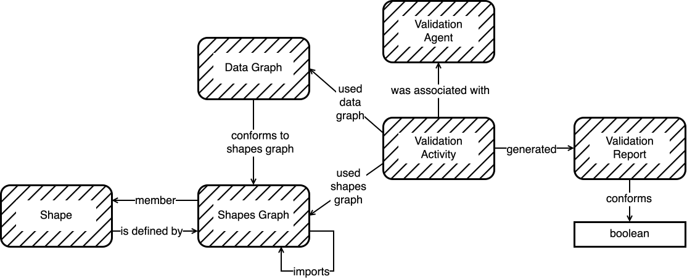

This document defines SHACL Profiling.
SHACL, the Shapes Constraint Language, is a language for describing the structure of RDF graphs. SHACL may be used for a variety of purposes such as validating, inferencing, modeling domains, generating ontologies to inform other agents, building user interfaces, generating code, and integrating data.
SHACL Profiling defines elements of the SHACL Shapes Constraint Language that allow for the description of profiles of SHACL and profiling with SHACL. This document's scope is limited to profiling of RDF graphs, including graphs containing SHACL Shapes.
This specification is published by the Data Shapes Working Group.The introduction provides background concepts of profiling and states this specification's scope. It also provides term definitions and describes document conventions.
Section 2 covers packaging of SHACL for management.
Sections 3 & 4 cover the two main modes of profiling with SHACL, building on packaging.
This document deals with a narrow set of profiling tasks only - profiling of SHACL and profiling of RDF graphs with SHACL and, as such, only defines the vocabulary elements needed for that.
This document tries to fit within the broader set of tasks and definitions set by [[[dx-prof]]].
By definition, SHACL constrains RDF data, therefore, any data that is valid according to a shapes graph will be a profile of the data graph. If a shapes graph validates all elements of a data graph, the resulting valid data will be a "null" profile of the data graph, meaning it is identical to the original data graph.
[[[dx-prof]]] defines a profile to be:
a specification that constrains, extends, combines, or provides guidance or explanation about the use of other specifications
If a shapes graph is taken to be a "specification", then not only is the data that is valid according to the shapes graph a profile of the validated data graph, but the shapes graph itself also serves as a profile of the data model used for the data graph.
Within this document, we describe how to package SHACL information for optimal profiling, and we exemplify this with packaging of the RDF data created for each of the SHACL Specifications.
With the above section's concepts in mind, this specification defines the following, numbered as per their sections:
Terminology used throughout this specification is either defined here or taken from one of several sources:
Terms taken from other sources are linked to their definitions in text.
The terms defined here are:
An RDF/OWL class or property defined by one of the SHACL specifications.
All the defined terms used in this specification are listed in the index.
Within this specification, the following namespace prefix definitions are used:
| Prefix | Namespace |
|---|---|
dcterms: |
http://purl.org/dc/terms/ |
ex: |
http://example.com/ns# |
owl: |
http://www.w3.org/2002/07/owl# |
prov: |
http://www.w3.org/ns/prov# |
prof: |
http://www.w3.org/ns/dx/prof/ |
rdfs: |
http://www.w3.org/2000/01/rdf-schema# |
role: |
http://www.w3.org/ns/dx/prof/role/ |
sh: |
http://www.w3.org/ns/shacl# |
Within this specification, the following JSON-LD context is used:
{
"@context": {
"dcterms": "http://purl.org/dc/terms/",
"ex": "http://example.com/ns#",
"owl": "http://www.w3.org/2002/07/owl#",
"prof": "http://www.w3.org/ns/dx/prof/" ,
"rdfs": "http://www.w3.org/2000/01/rdf-schema#",
"role": "http://www.w3.org/ns/dx/prof/role/" ,
"sh": "http://www.w3.org/ns/shacl#"
}
}
Note that the URI of the graph defining the SHACL vocabulary itself is equivalent to
the namespace above, i.e., it includes the #.
References to the SHACL vocabulary, e.g., via owl:imports should include the #.
Throughout the specification, color-coded boxes containing RDF graphs in Turtle and JSON-LD will appear. The color and title of a box indicate whether it is a shapes graph, a data graph, or something else. The Turtle specification fragments use the prefix bindings given above. Only the Turtle specifications will have parts highlighted.
Conventions within figures are described by this key:

This document defines extensions to the data model of the SHACL Core specification [shacl12-core] for the purposes of profiling.
As well as sections marked as non-normative, all authoring guidelines, diagrams, examples, and notes in this specification are non-normative. Everything else in this specification is normative.
The syntactic rules specified here are given in English and use keywords MAY, MUST, MUST NOT, RECOMMENDED, SHOULD, and SHOULD NOT that are to be interpreted as described in BCP 14 [[RFC2119]] [[RFC8174]] when, and only when, they appear in all capitals, as shown here.
Conformance claims of data to this specification's rules can be tested by validation using the SHACL-SHACL Profiling validator in the SHACL-SHACL Annex of the SHACL Overview specification [shacl12-overview].
Packaging of SHACL is the presentation of SHACL elements in relation to shapes graph.
There are multiple reasons one might want to identify groups of SHACL elements and to know the relations between groups and individual SHACL elements. These reasons include wanting to understand the purpose(s) of a group, how a change in one group affects another group, and how to create a new group. Three Use Cases have been articulated for this:
Solutions to the Use Cases indicated above result in the following recommendations that build on well-established
practice, such as the use of instances of owl:Ontology to group SHACL elements:
sh:ShapesGraph SHOULD be used to group instances of SHACL elementssh:ShapesGraph that defines it with the rdfs:isDefinedBy predicatesh:ShapesGraph that uses a SHACL element, but does not define it, SHOULD indicate the SHACL element as a member with the rdfs:member predicatesh:ShapesGraph being used to group SHACL elements SHOULD indicate dependence on other groups of SHACL elements identified using instances of sh:ShapesGraph with the owl:imports predicateThe following subsections detail each of these recommendations.
Instances of sh:ShapesGraph SHOULD be used to group instances of SHACL element.
SHACL elements, like much other RDF definitional data, have often been grouped within instances of [[[owl2-rdf-based-semantics]]]'s
owl:Ontology class.
For example, the Open Geospatial Consortium's
GeoSPARQL 1.1 standard for spatial RDF data provides a
SHACL validator
containing 27 instances of sh:NodeShape and a similar number of instances of sh:PropertyShape within a Turtle
file. The file also contains an instance of owl:Ontology presenting metadata for the validating resource, such as its
modified date, a license for its use, and so on.
This recommendation supersedes that practice and recommends that sh:ShapesGraph, a specialised class
defined in [[[shacl12-core]]] specifically for grouping SHACL Elements, be used instead.
For mixed SHACL and OWL elements, such as NodeShapes and Class definitions, owl:Ontology SHOULD
continue to be used.
An instance of SHACL element SHOULD indicate the instance of sh:ShapesGraph that defines it with the rdfs:isDefinedBy predicate.
Common practice when placing SHACL elements into groups identified by use of an owl:Ontology instance
has been to just contain the elements and the ontology instance in an RDF file. This is reasonable for data exchange
but, when exchanged files are stored in an RDF database, associations between a container instance
and the SHACL elements defined within it may be lost. If loaded into a named graph,
the association might be kept with the named graph grouping the ontology and the SHACL elements but this is a non-semantic
association, i.e. one not seen directly in a graph.
This recommendation is that the creator of a SHACL element SHOULD indicate the group within which the SHACL element is defined. An example of such an assertion in RDF is as follows:
In Section 2.5 Syntactic Variations of Shapes and Classes of [[[shacl12-core]]], a warning is issued that while property shapes may be declared as blank nodes, it is preferable to declare them as IRIs as this enables better reuse across graphs. If including information about the shapes as per this section, IRIs SHOULD be used.
An instance of sh:ShapesGraph that uses a SHACL element, but does not define it, SHOULD indicate the SHACL element as a member with the rdfs:member predicate.
When a SHACL element is used within a group of elements but not defined by it, it SHOULD NOT be indicated as being defined by that group, so the recommendation in the section above is irrelevant. Reuse of SHACL elements within groups that do not define them is expected and encouraged, according to Linked Data principles [[?LDP]].
An example of the use of the rdfs:member predicate to indicate inclusion of a SHACL element in a group
that does not define it, as well use of rdfs:isDefinedBy, as in the example above, is as follows:
Instances of sh:ShapesGraph being used to group SHACL elements SHOULD indicate dependence on other groups of SHACL elements identified using instances of sh:ShapesGraph with the owl:imports predicate.
It is established practice within SHACL validation tooling to import SHACL elements from one collection, such as a
file containing RDF data, into another via an owl:imports instruction. Many SHACL validation engines
do this, such as pySHACL [[?PYSH]], and this practice is recommended to indicate dependence from one collection/group
to another, even if no particular validation engine's actions are expected to arise from the assertion: it is
likely usefully informative for SHACL data management too.
An example of owl:imports is as per the example below.
Dependency can be calculated when the packaging recommendations above are used.
TODO
It may be necessary to persist the result of a validation actions and, given that the inputs to and outputs from SHACL validation are in RDF, persisted results should be too. The W3C's standard for provenance, [[[prov-o]]], provides a general model for provenance recording which we specialize here in the SHACL Profiling Vocabulary below, which is a subset of [[[shacl12-core]]]'s vocabulary.
The general PROV-O provenance model, as per its starting point diagram in
Figure 1, sees prov:Activity instances representing
temporal events consuming - prov:used - and producing - prov:generated - things
- prov:Entity instances - while being conducted by - prov:wasAssociatedWith - persons,
organizations or systems - prov:Agent instances.
SHACL validation events - processing - are represented as a
specialized form of prov:Activity: sh:ValidationActivity.
processor objects as a specialized form of prov:Agent:
sh:ValidationAgent.
SHACL 1.2 Core's Validation section specifies that the
necessary inputs to processing are a data graph
- sh:DataGraph - and a shapes graph -
sh:ShapesGraph and processor
implementations may also cater for additional resources, perhaps used for reasoning, and also defines
processing as producing sh:ValidationReport instances. All these are
specialized forms of prov:Entity.
Since a sh:ValidationActivity must have at least a data graph
and a shapes graph as inputs, and they have very different roles, two
specialized forms of prov:used are supplied to indicate them: sh:usedDataGraph and
sh:usedShapesGRaph.
The figure below shows the SHACL elements mentioned above related to one another using PROV-O properties and shaped and colored according to PROV-O's Figure 1.

Using the modeling above, 'activity-centric' and 'output-linked' forms of processing may be modeled, as per the examples below. This allows for provenance with temporality and simpler provenance, respectively.
This document's conforms to Shapes Graph rule may be used to create a direct relationship between the Data Graph and Shapes Graph, as per 'output-liked' example above.
This section describes how existing profiles of SHACL 1.2 are made, gives examples of some and indicates how to create more profiles of SHACL.
See Annex A for a listing of profiles of SHACL known at the time of this specification's publication and for links to community managed profiles.
Profiles of SHACL should be declared using [[[dx-prof]]]. The declaration of the Core profile of SHACL 1.2 is as follows:
This declaration identifies the Core profile with the IRI <http://www.w3.org/ns/shacl/profile/core> and
indicates it is an instance of prof:Profile, that it is a profile of the original SHACL publication from
2015 and that it has two profile resources: a specification and a validator.
When described using terminology from [[[dx-prof]]], the online document form of each specification linked to above is just one of many resources that together make a profile of SHACL 1.2. The document plays the resource role of Specification — "Defining the profile in human-readable form" — and other resources play other roles. Of particular interest to SHACL users is the SHACL shapes graph for each profile that plays the role of Validation — "Supplies instructions about how to verify conformance of data to the profile". The various profiles of SHACL 1.2 may supply additional resources with other profile resource roles.
The shapes graph validation resources are given in SHACL 1.2 Overview's SHACL-SHACL appendix.
To validate RDF data against any of these Specification Profiles, or the Union Profile defined below, use the SHACL-SHACL shapes graphs listed in the SHACL 1.2 Overview's SHACL-SHACL appendix.
Describe how to pick and choose SHACL elements to support in your profile using Packaging of SHACL.
A profile of SHACL 1.2 for each of the specifications listed above is known at the time of this specification's publication. In addition, a union profile - all the specification profiles combined - is also known.
A computational effort-defined profile of SHACL and a SHACL UI implementation effort-defined profile of SHACL are also known.
These known profiles are listed in Appendix A and future profiles of SHACL are to be listed in the W3C SHACL community controlled repository at https://github.com/w3c/shacl-resources.
Here are some other profiles of SHACL that use different logic to scope their contents.
Additional profiles of SHACL 1.2 may be created using any criteria. For example, it may be desirable to have profiles of SHACL 1.2 Core that only implement shape types limited to particular computation complexities, much like the profiles of OWL [[[?owl2-profiles]]]. In this case, a profile definition could be made that uses the mechanisms given in the Packaging SHACL section above, to only include some of SHACL 1.2 Core's elements.
When making profiles of SHACL 1.2, it is important to identify and present the profile as per the currently known profiles of SHACL 1.2 — the Specification Profiles and the Union Profile — so they can be used effectively, including by others. Creators of profiles of SHACL 1.2 SHOULD:
This section describes how to create profiles of RDF resources with SHACL.
General profiling terms and elements from [[[dx-prof]]] are used as well as more specialised SHACL profiling elements defined in the .
Since SHACL was released in 2017, it has been used extensively to make closed-world RDF data models for use by applications, building on open-world RDF models such as W3C ontologies.
A typical example, the Indigenous Data Network defines a profile of schema.org which constrains that general-purpose RDF vocabulary for use in the field of Indigenous data cataloguing. The IDN provides a SHACL validator to test catalogued objects' metadata with for conformance to that profile.
In addition to constraining a general-purpose or permissive model, shapes graphs can be defined for specifications that do not provide a resources to validate data according to their rules. Where the shapes graph imposes no additional rules on the original model and also attempts to implement all the specification's rules, it creates a null profile of it.
In addition to profiling specifications, when used to extract data from an RDF dataset, SHACL creates data profiles of that dataset.
The following sections describe and provide guidance on profiling specifications and profiling data.
Aligning with [[[dx-prof]]], we take the term Specification to be synonymous with the term Standard which it defines.
A shapes graph, SG1, used to
profile a specification S1, SHOULD be characterized
using the following Profiles Vocabulary formulation:
As per [[[dx-prof]]], resources within a profile perform roles and in this above formulation,
SG1 is undertaking both schema - data
model - and validation - actionable Shapes Graph -
roles, so a more complete formulation that indicates the Shapes Graph artifact itself conforms to
[[[shacl12-core]]] and is available in the [[[turtle]]] format and which leaves out the SHACL classing, follows.
There are additional profile roles that SHACL resources may play, for example, rules formulated according to [[[shacl12-rules]]] may in the mapping role allowing for conversions to/from a profile to another data model.
[[[dx-prof]]] contains a single reasoning axiom which allows data conformant with a profile to be understood to conform to the specification that the profile is a profile of:
Check back with PROF regarding use of dcterms:conformsTo in case they define a prof:conformsTo
Given this axiom, the definition provided here of conformsToShapesGraph
and the modeling in the section Persisting validation results, we can infer
another reasoning rule which is defined in the vocabulary below: conforms to specification.
This rule is presented to allow data which is declared to be valid according to a Shapes Graph that is a profile of a specification to be understood to conform to that specification. This rule is important for the creation of null profiles using SHACL, as per section .
If data must be tested for conformance to a profile defined using SHACL and also the specifications that the profile is a profile of, if those specifications are either defined also using SHACL or if they provide resources with role validation created using SHACL, then a Shapes Graph may be created that is a compound of the profile and the specifications or their validators.
This is expected to be important when a profiling situation is complex - perhaps multiple specifications are profiled or profiles of other profiles are created - for assembling the automated Shapes Graphs from specifications and profiles might be far preferable to manual assembly.
Before the creation of SHACL, there was no standardized way of expressing closed-world RDF data models or validators for RDF models. Now that we have SHACL, we may create a null profile of a specification that allows us to retrofit a mechanism for validation onto specifications created using modeling systems such as [[[owl2-overview]]].
As per [[[dx-prof]]] and the Introduction in this section, a null profile of a specification is one that imposes no additional rules on the original specification and also attempts to implement all the specification's rules.
While null profiles of specifications can be created using modeling or rule sustems other than SHACL, here we focus only on the use of SHACL.
Up to here
The main purpose of creating a null profile of a specification using SHACL is to enable the testing of conformance to that specification by SHACL validation. This purpose exists because many RDF data models exist that have a model specification, perhaps an OWL model or only a natural-language document of a model, but do not provide a mechanism for data validation, such as a SHACL validator. Examples of such models are: [[[vocab-dcat-3]]], [[[schema-org]]], [[[vocab-data-cube]]], and many W3C standards.
An example of a non-SHACL validator for RDF data that acts as a null profile is the W3C's [[[prov-constraints]]] which provides a list of constraints that apply to provenance data formulated according to [[[prov-o]]]. [[[prov-constraints]]] implements no constraints beyond those stated or implied in [[[prov-o]]] and the conceptual [[[prov-dm]]], however it does include tests for things that the models do not explicitly model but whose proper use requires, e.g., for ordering of temporal entities. Implementations of those constraints have been made as Python scripts that execute SPARQL queries, allowing for RDF data validation.
No universal and precise methodology can be given for creation of a null profile of a specification, because, by the task's very nature, the specification's rule(s) may be imprecisely defined, and thus the method used to characterize them in SHACL, which is precise, will vary just as the imprecise rule definition does.
See [[[#null-profile-examples]]] for examples of null profiles of other specifications.
Section content removed as duplicative of Profiling Specifications above.

All elements of this vocabulary are members of the SHACL Core vocabulary, which has RDF serializations available at
its namespace location of http://www.w3.org/ns/shacl#.
All the classes and predicates detailed here are shown in relation to one another in .
| RDF Class: | sh:ShapesGraph |
|---|---|
| Is defined by: | [[[shacl12-core]]] |
| Sub-class of: | owl:Ontology |
| Definition: | A shapes graph is an RDF graph containing zero or more shapes that is passed into a processing activity so that a data graph can be validated against the shapes. |
| See also: | SHACL 1.2 Core: Shapes Graph |
| Scope note: | For the purposes of SHACL profiling, this class is to be used to group SHACL elements together, as per Section [[[#packaging]]]. |
| RDF Property: | owl:imports |
|---|---|
| Is defined by: | [[[owl-ref]]] |
| Definition: | The property that is used for importing other ontologies into a given ontology. |
| Domain: | owl:Ontology |
| Range: | owl:Ontology |
| See also: | OWL Web Ontology Language Reference: importing an ontology |
| Scope note: | For the purposes of SHACL profiling, this predicate is to be used to indicate dependency between Shapes Graphs, as per Section [[[#rec-imports]]]. |
| RDF Property: | rdfs:member |
|---|---|
| Is defined by: | [[[rdf12-schema]]] |
| Definition: | A member of the subject resource. |
| Domain: | Resource |
| Range: | Resource |
| See also: | RDF 1.2 Schema: member |
| Scope note: | For the purposes of SHACL profiling, this predicate is to be used to associate a Shapes Graph with each Shape that it uses, whether defined by it or elsewhere, as per Section [[[#rec-member]]]. |
| RDF Class: | sh:DataGraph |
|---|---|
| Is defined by: | [[[shacl12-core]]] |
| Definition: | Any RDF graph can be a data graph. |
| Usage note: |
Use this class to represent RDF graphs that you wish to make conformance claims for.
For example, record graphs of RDF data as Data Graphs when testing their conformance
according to the GeoSPARQL 1.1 standard's Shapes
Graph (http://www.opengis.net/def/geosparql/validator).
|
| See also: | SHACL 1.2 Core: Data Graph |
| Scope note: | For the purposes of SHACL profiling, this class is to be used to represent RDF data that is to have SHACL-related claims made about it. |
| RDF Property: | sh:conformsToShapesGraph |
|---|---|
| Is defined by: | [[[shacl12-core]]] |
| Definition: | The subject conforms to the object if processing did not produce any validation results with a severity level of the set of disallowed levels. |
| Domain: | Data Graph |
| Range: | Shapes Graph |
| Usage Note: | When used, this property indicates unqualified conformance whereas provenance of validation, as per , can record validity at a point in time if the 'activity-centric' form is used. |
| RDF Class: | sh:ValidationReport |
|---|---|
| Is defined by: | [[[shacl12-core]]] |
| Definition: | A validation report is the result of the validation processing that reports the conformance and the set of all validation results. |
| See also: | SHACL 1.2 Core: Validation Report |
| RDF Property: | sh:conforms |
|---|---|
| Is defined by: | [[[shacl12-core]]] |
| Definition: | Represents the outcome of the conformance checking the Validation Report is describing. |
| Domain: | Validation Report |
| Range: | boolean |
| See also: | SHACL 1.2 Core: conforms |
| RDF Class: | sh:ValidationAgent |
|---|---|
| Is defined by: | [[[shacl12-core]]] |
| Definition: | A validation agent is an agent that bears responsibility for a validation activity taking place. |
| Usage note: | Instances of validation agent are expected to be software agents. |
| See also: | SHACL 1.2 Core: Processor Configuration |
| RDF Class: | sh:ValidationActivity |
|---|---|
| Is defined by: | [[[shacl12-core]]] |
| Definition: | A validation activity is an activity in which a data graphs is validated againts the shapes in a shapes graph. |
| See also: | SHACL 1.2 Core: Validation Activity |
| RDF Property: | sh:usedDataGraph |
|---|---|
| Is defined by: | [[[shacl12-core]]] |
| Definition: | The subject Validation Report was generated by validating the object Data Graph. |
| Domain: | Validation Report |
| Usage note: | The version IRI of a Data Graph may also be used as an object for this property. |
| Range: | Data Graph |
| See also: | SHACL 1.2 Core: Used Data Graph |
| RDF Property: | sh:usedShapesGraph |
|---|---|
| Is defined by: | [[[shacl12-core]]] |
| Definition: | The property that is used to indicate the utilization of a shapes graph by a validation activity. |
| Domain: | owl:ValidationActivity |
| Range: | sh:DataGraph |
| RDF Property: | prov:generated |
|---|---|
| Is defined by: | [[[prov-o]]] |
| Inverse: | prov:wasGeneratedBy |
| Definition: | Generation is the completion of production of a new entity by an activity. |
| Domain Includes: | sh:ValidationActivity |
| Range Includes: | sh:ValidationReport |
| RDF Property: | prov:wasAssociatedWith |
|---|---|
| Is defined by: | [[[prov-o]]] |
| Definition: | An activity association is an assignment of responsibility to an agent for an activity. |
| Domain Includes: | sh:ValidationActivity |
| Range Includes: | sh:ValidationAgent |
| RDF Class: | sh:Shape |
|---|---|
| Is defined by: | [[[shacl12-core]]] |
| Definition: | A shape is a collection of constraints that may be targeted for certain nodes. |
| See also: | SHACL 1.2 Core: Shape |
| RDF Property: | rdfs:isDefinedBy |
|---|---|
| Is defined by: | [[[rdf12-schema]]] |
| Definition: | The subject used the object when determining validity of a tested Data Graph. |
| Domain: | Validation Report |
| Range: | Shapes Graph |
| See also: | RDF 1.2 Schema: isDefinedBy |
The rule 'conforms to shapes graph' is a reasoning rule that allows a Data Graph to be indicated as conforming
to a Shapes Graph if there is a Validation Report that used the Data Graph
and Shapes Graph for validation and whose sh:conforms property indicates true.
This reasoning rule cannot be articulated as an OWL property chain axiom due to the test of the
sh:conforms property value, so it is presented here as both a [[[sparql12-query]]] rule and a [[[shacl12-rules]]] rule.
The rule 'conforms to specification' is a reasoning rule that allows for a Data Graph to be indicated as
conforming to a Specification if the Data Graph conforms to a
Shapes Graph that is a profile of that Specification.
This reasoning allows for static conformance claims of data to profiles of specifications and specifications
themselves to be made, which will have utility for data whose conformance to these things must be known but which
cannot be continuously validated.
This reasoning rule is presented here as both a [[[sparql12-query]]] rule and a [[[shacl12-rules]]] rule.
The result of this rule also enables the [[[dx-prof]]] property chain axiom
dcterms:conformsTo owl:propertyChainAxiom ( dcterms:conformsTo prof:isProfileOf )
to propagate conformance claims up a profile hierarchy.
Elements of this vocabulary, as presented in the main SHACL vocabulary, do not indicate alignment with other domain models, to keep SHACL's dependencies low. However, this document introduces informative alignments with which are summarized here.
The logic for this alignment with [[[prov-o]]] is given in section .
| From | Relationship | To |
|---|---|---|
sh:ValidationAction |
rdfs:subClassOf |
prov:Activity |
sh:ValidationAgent |
rdfs:subClassOf |
prov:Agent |
sh:usedDataGraph |
rdfs:subPropertyOf |
prov:used |
sh:usedShapesGraph |
rdfs:subPropertyOf |
prov:used |
Issues labeled 'Profiles' not present elsewhere in the document:
dx-prof-1.0 to use data-cite rather than href when it resolves at on SpecRefThis appendix lists profiles of SHACL 1.2 known at the time of this specification's publication, formulated as per the section Profiling of SHACL. It also indicates where the W3C's SHACL community maintains an informal register of profiles of SHACL that can be added to after this document has been finalised
The definition of each of the 7 Specification Profiles in RDF are available here:
The Union Profile definition is available in RDF too:
The Union Profile of SHACL 1.2 is the conceptual whole of SHACL 1.2 which covers all aspects of the SHACL 1.2 series of Specifications. There is no single human-readable Union Profile specification document — you must read all the documents individually, as linked from the specification section — but there is a single validation resource: a shapes graph comprising all the individual profiles' validation shapes graphs.
The Union Profile shapes graph is given in the SHACL 1.2 Overview's SHACL-SHACL appendix.
The SHACL 1.2 UI profile of SHACL is a subset of the vocabulary elements of SHACL Core selected for their ease of implementation as user interface components as implemented for the SHACL 1.2 UI specification.
TODO
The CD1 ("Computationally-Defined #1") profile of SHACL is a subset of the vocabulary elements of SHACL Core, SPARQL and Node Expressions vocabulary elements selected for their computational simplicity.
The reason for defining this CD1 profile is twofold:
This profile is defined in the resource http://www.w3.org/ns/shacl/profile/cd1, a portion of which is as follows:
All the class and property elements of SHACL 1.2 are listed where ... many skipped members
is indicated above except for:
blah:BlahBlahblah:OtherBlahTODO
The Pretty Print profile of SHACL is a subset of the vocabulary elements of SHACL that are selected to ensure "pretty" - easy to read - error messages are generated by validation processes.
The Owl Consistent profile of SHACL is a subset of the vocabulary elements of SHACL that are selected to ensure shapes definitions do not violate OWL constraints on the classes and predicates they target.
This appendix contains examples of null profiles of other specifications.
This profile is a null profile of the [[[!w3c-basic-geo]]]. The purpose of this profile is to demonstrate what a null profile of a very simple RDF vocabulary looks like.
TODO - see file pos.ttl in repo
This profile is a null profile of [[[dx-prof]]].
The purposes of this profile are to both provide a SHACL-based validator for PROF data and to demonstrate what a slightly more complex null profile of a vocabulary looks like.
This null profile implements all the OWL rules of PROF as well as some rules stated in the PROF specification that are not implemented in the PROF ontology.
TODO
Like most RDF-based technologies, SHACL processors may operate on graphs that are assembled
from various sources. Some applications may have an open "linked data" ("LD") architecture and dynamically
assemble RDF triples from sources that are outside an organization's network of trust.
Since RDF allows anyone to add statements about any resource, triples may modify the originally
intended semantics of shape definitions or nodes in a data graph and thus feed
into misleading results.
Protection against this (and the following) scenario is achievable by using only trusted
and verified RDF sources and eliminating the possibility that graphs are dynamically added via
owl:imports and sh:shapesGraph.
When creating profiles of other specifications, profile creators need to ensure that their constraints do not violate those specification's rules. If any did so, and if only the profile's rules, but not the specification's rules, were used to check for data validity, by accident or by design, data could be wrongly calculated to be valid. This could lead to accidental data release or use, potentially introducing security issues.
Many people contributed to this specification, including members of the RDF Data Shapes Working Group.
TODO